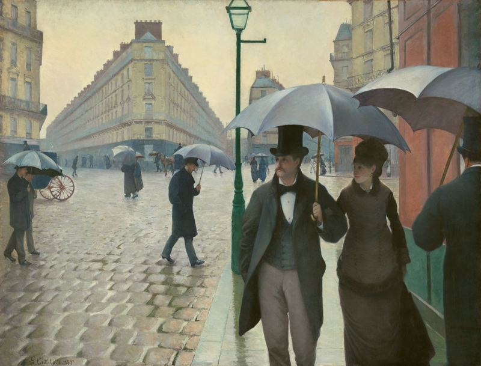
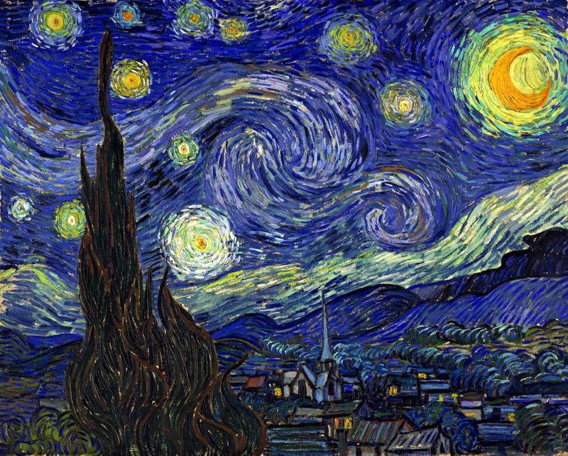

Paris Street; Rainy Day
by Gustave Caillebotte

Starry Night
by Vincent Van Gogh
Tiger in a Tropical Storm
by Henri Rousseau
A Sunday Afternoon on the Island of La Grande Jatte
by Georges Seurat
This
jQuery slider
was created with the free
EasyRotator
software from DWUser.com.
Close
Use your mouse to explore. Find, click, and hear...
Ready!